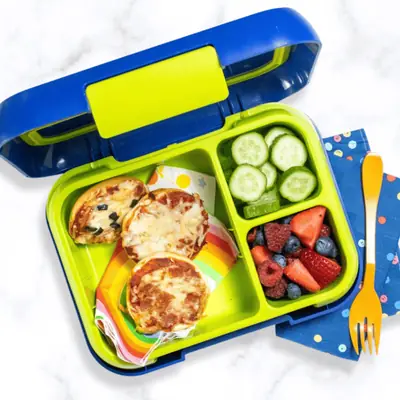

Throwback 10-Minute Bagel Bites (oven or air fryer)

Ingredients
- 6 mini bagels, (sliced in half)
- 1/2 cup pizza or pasta sauce
- 1 cup cheese, (shredded mozzarella or Italian blend)
- 1/2 cup toppings of choice, (optional)
Steps
- Preheat oven to 450° F. Line a baking sheet with parchment paper for easier cleanup. Place sliced bagels on a baking sheet.
- Optional – for a crispier crust, place the bagels in the oven for 3 minutes.
- Spread the toasted bagels with the sauce of your choice, top with cheese and add any toppings you are using.
- Place the bagel pizzas into the oven and bake for 5 minutes or until golden brown and the cheese is bubbling.
- Let cool slightly, then serve warm or set aside to cool to room temperature before freezing.
- Place cut bagels (cut side down) into your air fryer basket or tray and cook at 375°F for 2-3 minutes.
- Flip the bagels and top with the sauce, cheese, and any toppings you are using.
- Cook for an additional 5 minutes or until the cheese is melty and golden brown.
- Let cool slightly before serving.
Recipe by Baby Foode, from Baby Foode. Saved here for personal use; the original has the full notes, tips and photos. Open original